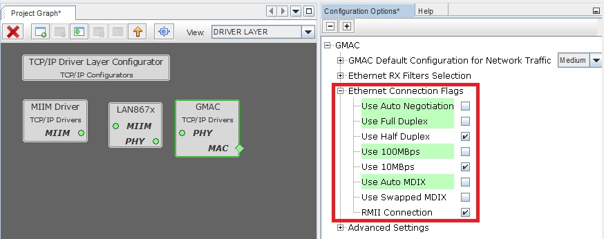

10BASE-T1S TCP/IP application with Iperf support
The example showcases, how to configure LAN867x ethernet phy in Harmony 3 and establish a network. It also contains example about, how to access and modify the register of LAN867x from user code space.
Development kits
The following table provides details of the hardware used for the example.
| Development Kit |
|---|
| Sam E54 Curiosity Ultra |
| LAN867x RMII board |

Harmony 3 Setting for LAN867x
GMAC Setting
To use the LAN867x Ethernet PHY, configure the GMAC to operate in 10BASE-T1S setting
- 10 Mbps
- Half Duplex
- Auto Negotiation - Disabled
- MDIX - Disabled

PLCA Setting
10BASE-T1S can be used in PLCA or CSMA/CD mode. In PLCA mode, kindly set Node Id and Node Count.